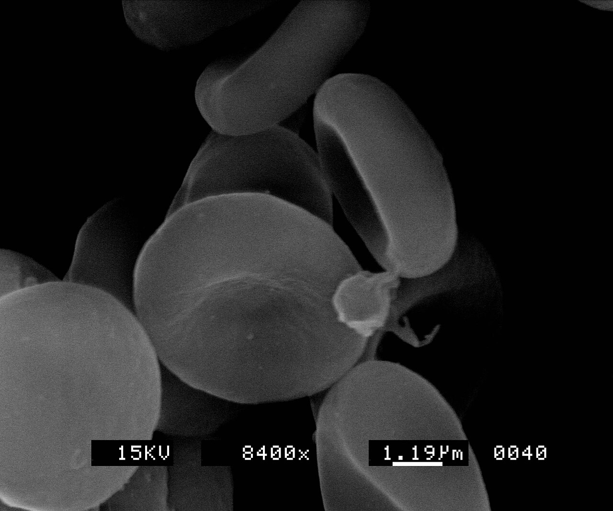

细胞膜的结构和功能
本期导读
探索历程 · 流动镶嵌模型 · 糖被

视频原话 · 导读3 句
- 同学们好！这节课梳理人教版必修一第三章第一节——细胞膜的结构和功能。7.6s
- 高考常考细胞膜的三大功能、膜结构的探索历程，以及流动镶嵌模型。6.8s
- 我们按七个考点梳理，每个考点都讲清楚怎么考、怎么做。5.6s
细胞膜的功能01#
- 1将细胞与外界环境分隔开，保障细胞内部环境的相对稳定
- 2控制物质进出细胞（作用是相对的，病毒、病菌也可能侵入）
- 3进行细胞间的信息交流
考法
台盼蓝染色：死细胞被染色，活细胞不着色 → 体现细胞膜控制物质进出的功能
视频原话4 句
- 考点一，细胞膜的功能。第一，将细胞与外界环境分隔开，保障细胞内部环境的相对稳定。9.2s
- 第二，控制物质进出细胞；但这种控制作用是相对的，有些病毒、病菌也能侵入细胞。8.4s
- 第三，进行细胞间的信息交流。3.5s
- 考法：用台盼蓝染色鉴别死活细胞，死细胞被染色，活细胞不着色，体现了细胞膜控制物质进出的功能。10.1s
信息交流的方式02#
① 化学物质传递
激素随血液运输，与靶细胞膜上的受体结合
② 细胞膜直接接触
相邻细胞膜接触：精子和卵细胞的识别和结合
③ 形成通道
高等植物细胞之间通过胞间连丝相互连接
易错
信息交流不一定需要膜上的受体（胞间连丝）；有些激素（如性激素）的受体在细胞内
视频原话4 句
- 考点二，细胞间信息交流的三种方式。第一，通过化学物质传递：如激素随血液到达全身，与靶细胞膜表面的受体结合。12.0s
- 第二，相邻两个细胞的细胞膜直接接触：如精子和卵细胞之间的识别和结合。7.7s
- 第三，相邻两个细胞之间形成通道：如高等植物细胞之间的胞间连丝。7.0s
- 易错：信息交流不一定需要膜上的受体，胞间连丝就不需要；有些激素的受体在细胞内。8.5s
对膜成分的探索03#
- 1欧文顿溶于脂质的物质更易穿过细胞膜 → 膜的主要成分中有脂质
- 2化学分析膜中的脂质主要是磷脂
- 3红细胞实验单分子层面积 ＝ 红细胞表面积的 2 倍 → 磷脂排列为连续的两层
- 4表面张力细胞表面张力低于油—水界面 → 膜中还附有蛋白质
考法
选哺乳动物成熟红细胞制备细胞膜：没有细胞核和众多细胞器，得到的膜较纯净
视频原话5 句
- 考点三，对细胞膜成分的探索。欧文顿发现，溶于脂质的物质更容易穿过细胞膜，推测细胞膜的主要组成成分中有脂质。11.9s
- 进一步分析得知，膜中的脂质主要是磷脂。4.3s
- 科学家从人的红细胞中提取脂质，铺成单分子层，面积恰为红细胞表面积的2倍，推断磷脂分子排列为连续的两层。11.2s
- 人们又发现细胞的表面张力明显低于油—水界面，推测细胞膜中还附有蛋白质。7.7s
- 考法：为什么用哺乳动物成熟的红细胞制备细胞膜？解题方法：它没有细胞核和众多的细胞器，得到的膜比较纯净。11.3s
对膜结构的探索04#
罗伯特森（电镜）
暗 蛋白质
亮 脂质
暗 蛋白质
认为是静态的统一结构
无法解释细胞生长、变形虫运动
无法解释细胞生长、变形虫运动
人鼠细胞融合实验（荧光标记）
易错
该实验证明膜蛋白可以运动；方法是荧光标记法，不是同位素标记法
视频原话5 句
- 考点四，对细胞膜结构的探索。罗伯特森在电镜下看到细胞膜呈清晰的暗—亮—暗三层结构。9.8s
- 他提出细胞膜由蛋白质—脂质—蛋白质三层构成，是静态的统一结构；但这无法解释细胞的生长、变形虫的运动等现象。11.6s
- 1970年，科学家用荧光染料分别标记小鼠细胞和人细胞表面的蛋白质，再让两种细胞融合。9.5s
- 刚融合时，一半发红色荧光，一半发绿色荧光；37℃下经过40分钟，两种颜色均匀分布，说明细胞膜具有流动性。12.0s
- 易错：人鼠细胞融合实验证明膜蛋白可以运动，用的是荧光标记法，不是同位素标记法。8.6s
流动镶嵌模型05#
- 辛格和尼科尔森（1972）
- 磷脂双分子层是膜的基本支架
- 蛋白质：镶、嵌入、贯穿
- 磷脂可侧向自由移动，大多数蛋白质也能运动
易错
大多数蛋白质能运动（不是全部）；功能越复杂的膜，蛋白质的种类和数量越多
视频原话5 句
- 考点五，流动镶嵌模型。1972年，辛格和尼科尔森提出了流动镶嵌模型。8.1s
- 磷脂双分子层是膜的基本支架，磷脂分子的头部亲水，尾部疏水。6.6s
- 蛋白质分子有的镶在磷脂双分子层表面，有的部分或全部嵌入其中，有的贯穿整个磷脂双分子层。9.3s
- 磷脂分子可以侧向自由移动，大多数蛋白质分子也能运动。6.1s
- 易错：是大多数蛋白质能运动，不是全部；膜的功能主要由蛋白质承担，功能越复杂，蛋白质的种类和数量越多。10.9s
糖被06#
- 糖类 ＋ 蛋白质 → 糖蛋白；糖类 ＋ 脂质 → 糖脂
- 与细胞表面的识别、信息传递有关
解题方法
糖被只在膜外侧：有糖被的一侧是细胞外，用来判断膜的内外侧
视频原话3 句
- 考点六，糖被。细胞膜外表面的糖类分子，与蛋白质结合形成糖蛋白，与脂质结合形成糖脂，这些糖类分子叫作糖被。12.4s
- 糖被与细胞表面的识别、细胞间的信息传递等功能有密切关系。6.1s
- 解题方法：糖被只分布在细胞膜的外侧，有糖被的一侧是细胞外，可以用来判断膜的内外。8.4s
流动性与选择透过07#
结构特点：流动性
具有一定的流动性
实例：变形虫运动、胞吞胞吐、细胞融合、质壁分离
功能特性：选择透过性
与膜上转运蛋白的种类和数量有关
易错
流动性 ＝ 结构特点，选择透过性 ＝ 功能特性；流动性是选择透过性的基础
视频原话4 句
- 考点七，结构特点和功能特性。细胞膜的结构特点是具有一定的流动性。7.5s
- 实例有变形虫的变形运动、胞吞和胞吐、细胞融合、质壁分离等。6.8s
- 细胞膜的功能特性是选择透过性，这与膜上转运蛋白的种类和数量有关。7.1s
- 易错：流动性是结构特点，选择透过性是功能特性，别颠倒；流动性是选择透过性的基础。9.4s
易错速查✓
先自己判断，再点按钮查看对错与解析。
- 1细胞膜控制物质进出的作用是绝对的说法错误：是相对的，有些病毒、病菌也能进入
- 2细胞间信息交流都需要细胞膜上的受体说法错误：胞间连丝不需要受体
- 3罗伯特森认为细胞膜是静态的统一结构说法正确。
- 4人鼠细胞融合实验用了同位素标记法说法错误：用的是荧光标记法
- 5糖被分布在细胞膜的内外两侧说法错误：只分布在细胞膜的外侧
- 6细胞膜的功能特性是具有一定的流动性说法错误：功能特性是选择透过性
流动性是结构特点，选择透过性是功能特性！
视频原话 · 易错速查5 句
- 最后，用六道判断题检验一下。3.6s
- 判断一？错，控制作用是相对的。判断二？错，胞间连丝不需要受体。8.3s
- 判断三？对。判断四？错，用的是荧光标记法。6.4s
- 判断五？错，糖被只在外侧。判断六？错，功能特性是选择透过性。8.5s
- 七个考点串成一条线：结构决定功能，流动性是选择透过性的基础。我们下期再见！8.5s
图片来源
图片来源：Wikimedia Commons —— Scootdive《Red blood cells (2)》CC BY-SA 3.0
Photo: Scootdive, CC BY-SA 3.0 (cropped)